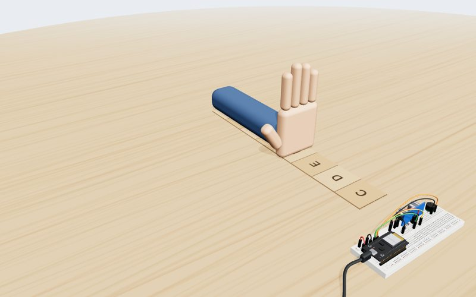
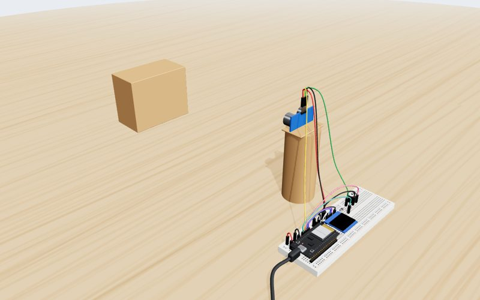
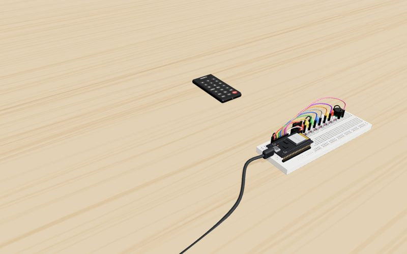
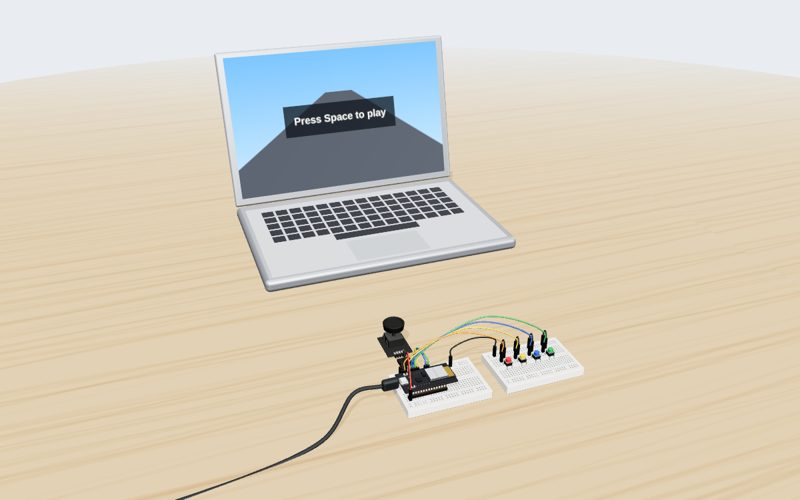
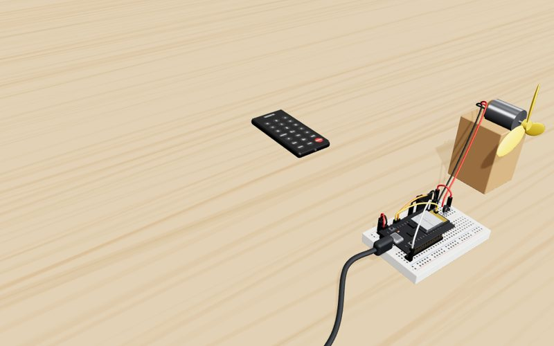
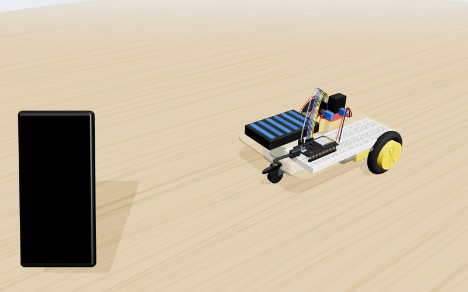

DENISE Engineering & Robotics Club · Amsterdam
Every build, step by step in 3D. Each part drops into its exact breadboard hole and every wire draws itself in, with the hole names shown, so you can follow along at your table. The last step shows the build working.

Move your hand above cardboard keys and a buzzer plays the note.

A reversing sensor like on a car: the screen counts down the distance and the buzzer beeps faster as you get closer.

Play Do-Re-Mi and whole songs from a remote, with a light for every note.

A Bluetooth controller for browser games: the joystick presses the arrow keys, four buttons press Space, Enter, Esc and P.

Switch a fan on and off and change its speed with the remote.

A 2WD car you drive from your phone over the car's own WiFi.